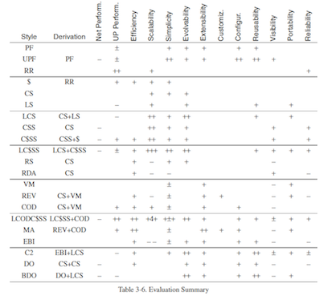

Introducción a REST
- En la década de los 90 Roy T. Fielding realizó un estudio
en el que buscaba el estilo arquitectónico que más propiedades
aportara a sistemas en Red basados en Hypermedia.

El
estilo más prometedor fue
Layered-Code-on-Demand-Client-Cache-Stateless-Server (LCODC$SS)
REST: LCODC$SS + Interfaz Uniforme
- REST surge como fruto de este estudio.
- Se basa en el estilo arquitectónico LCODC$SS + el uso de
una Interfaz Uniforme para la comunicación entre componentes.

RESTful HTTP
RESTful: Implementación que cumple con el estilo REST.
La implementación más conocida y exitosa es RESTful HTTP.
Modela el concepto de Interfaz Uniforme usando el patrón Verbo
+ Sustantivo:
- Verbos: Definidos por el protocolo HTTP. Son las
acciones: GET, POST, PUT, DELETE, HEAD, OPTIONS.
- Sustantivos: Son definidos por el protocolo URI.
Identifican de forma inequívoca a recursos dentro de la Web.
Introducción a Servicios REST
Historicamente lo comunicación remota entre componentes ha
sido un problema para la programación distribuida. Distintas
soluciones:
- Basadas en RPC: Son muy complejas. CORBA, RMI, etc.
- Basadas en MOM: Muy interesantes para comunicaciones
asíncronas. Tuvieron su auge con el estándar JMS.
- Web Services: Basado en protocolos SOAP, WSDL, UDDI.
Tienen su auge gracias a SOA. Demasiada Complejidad.
Servicios REST en la Web Moderna
La Web Moderna es Social: Los contenidos los crean y poseen
usuarios no Administradores.
Cientos de Aplicaciones se comunican entre ellas para
compartir información del usuario.
REST predomina en este ámbito. Características avanzadas:
- Seguridad mediante OAuth.
- Interfaz definidad por estándar WADL o WSDL.
REST en la Práctica
Servidor en REST (basado en GRAILS).
Cliente en REST (basado en JMVC).Factible gracias a Ajax.